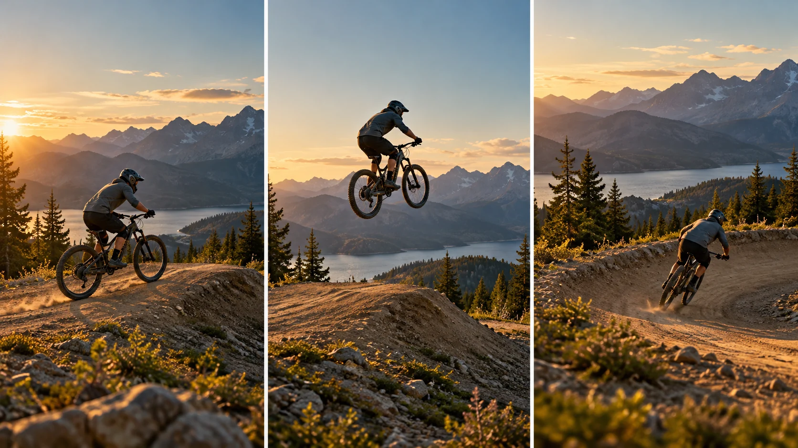

F22 · 고급 · FPV
관찰·토론
선수와 지형의 관계를 남겨 점프의 원인과 결과가 모두 보이는 추적 구도를 판단한다.
그림에서 확인할 세 가지따라잡기보다 행동을 읽히게 한다
1도약 직전의 지형
첫 화면의 작은 흙 경사와 바퀴의 위치를 본다. 선수가 왜 위로 움직이게 되는지 지형이 행동의 원인을 설명한다.
2몸과 자전거의 공중 자세
가운데 화면에서 선수와 자전거 전체가 읽히는지 살핀다. 배경과 분리되더라도 동작의 일부가 잘리면 움직임의 형태가 약해진다.
3착지와 이후의 길
마지막 화면은 바퀴가 돌아갈 지면과 다음 길을 보여준다. 점프의 순간뿐 아니라 행동이 어디로 이어지는지도 함께 읽는다.
촬영 설계
촬영을 이렇게 설계한다
도약의 지형을 보인다
학습 장면에서는 선수가 어디서 떠오르는지 먼저 보여준다. 인물만 크게 따라가면 점프 높이와 난도가 과장되거나 모호해질 수 있으므로 출발 지형이 읽히는 각도를 정한다.
공중의 크기를 유지한다
선수가 떠 있는 동안 프레임의 크기와 위치가 급변하지 않는지 비교한다. 몸과 자전거가 함께 들어오는 여유를 남기고 공중 동작이 화면 가장자리에서 잘리지 않도록 촬영안을 검토한다.
착지의 결과를 남긴다
착지 전에 화면을 다른 곳으로 돌리지 않고 바퀴와 지면의 관계가 읽히는 끝을 계획한다. 학습안에서는 점프의 시작과 결과가 모두 보이는지를 기준으로 사용할 길이를 결정한다.
제작사 포트폴리오는 Red Bull HardLine One-take라는 액션 스포츠 프로젝트를 소개한다.
원본 영상Red Bull HardLine One-take
1. 행동의 시작
선수가 떠오르기 전 지형과 진행 방향이 보이는지 본다. 공중 장면만 강하게 보이는 것과 점프의 전체를 이해하는 것을 구별한다.
2. 몸과 장비의 완결
선수와 자전거가 함께 읽히는지 확인한다. 가까운 시점의 박력 때문에 핵심 동작이 프레임 밖으로 나가는지 살핀다.
3. 착지의 결과
바퀴가 지면으로 돌아오는 순간과 이후 진행이 남는지 본다. 행동의 끝이 빠지면 원테이크의 연속성보다 결과 정보가 부족해진다.
재생이 제한되면 원본 영상 새 창을 이용하세요.
공식 소개 · 한국어 요약
액션 스포츠 소개를 실행 지침으로 오인하지 않는다
공식 정보
메타데이터 요약: Dutch Drone Gods는 Red Bull HardLine One-take를 Red Bull Mediahouse의 액션 스포츠 프로젝트로 소개하고 참여 조종자를 표시한다.
미공개 방식
페이지에는 구간별 카메라 경로나 추적 거리, 점프의 타이밍을 맞춘 방법이 없다.
학습안 범위
도약·공중·착지의 학습안은 영상 분석을 위한 관찰 틀이며 실제 고난도 촬영의 실행 지침이 아니다.
Kling 프롬프트단문 인과 체인 · 16:9
내가 직접 만들어 본다
경사가 앞바퀴를 띄우고 공중 전체가 보인 채 착지까지 이어지는 점프의 원인과 결과를 지휘한다.
- S01흙길 끝에 작은 흙 경사가 있다.
- S02영상은 하나의 연속 쇼트다.
- S03화면에 드론 기체는 나오지 않는다.
- S04처음 10초 동안 자전거 선수가 경사를 향해 달린다.
- S05카메라는 선수와 경사를 함께 화면에 담는다.
- S06선수가 경사를 오르기 때문에 앞바퀴가 뜬다.
- S07다음 10초 동안 선수와 자전거가 공중으로 솟는다.
- S08카메라는 같은 거리를 유지하며 따라 난다.
- S09거리가 같아서 공중의 선수 전체가 화면에 남는다.
- S10경사는 선수 아래로 멀어진다.
- S11마지막 10초 동안 선수가 아래의 길로 내려온다.
- S12바퀴가 지면에 닿자 선수는 길을 따라 나아간다.
- S13카메라는 착지 뒤의 길까지 화면에 담는다.
[네거티브]
- 경사 없이 평평한 길만 나오는 것 금지
- 중간에 컷이 들어가 쇼트가 끊기는 것 금지
- 화면에 드론 기체가 나타나는 것 금지
- 선수가 경사 앞에서 멈추거나 속도를 잃는 것 금지
- 선수만 크게 잡혀 경사가 화면에서 빠지는 것 금지
- 앞바퀴가 뜨는 이유 없이 갑자기 날아오르는 것 금지
- 선수나 자전거 일부가 화면 가장자리에서 잘리는 것 금지
- 카메라가 점프 중 거리를 바꿔 크기가 급변하는 것 금지
- 공중에서 카메라가 다른 곳으로 시선을 돌리는 것 금지
- 경사가 화면에서 사라지거나 위치가 뒤바뀌는 것 금지
- 선수가 공중에서 화면 밖으로 사라지는 것 금지
- 착지 직전에 컷이 되어 결과가 잘려 나가는 것 금지
- 착지 뒤 길이 보이지 않고 선수 얼굴만 남는 것 금지
- S01영상은 FPV 시점의 하나의 연속 쇼트다.
- S02화면에 드론 기체는 나오지 않는다.
- S03흙길 끝에 작은 흙 경사가 있다.
- S04처음 10초 동안 자전거 선수가 경사를 향해 달린다.
- S05카메라는 선수의 뒤에서 낮게 질주해 경사로 따라붙는다.
- S06카메라는 길가 풀숲 위를 스치며 점점 속도를 높인다.
- S07선수가 경사를 오르기 때문에 앞바퀴가 뜬다.
- S08다음 10초 동안 선수와 자전거가 공중으로 솟는다.
- S09카메라는 선수를 따라 급상승한다.
- S10같은 거리를 유지해서 공중의 선수 전체가 화면에 남는다.
- S11카메라가 옆으로 기울며 수평선이 비스듬해진다.
- S12기울기가 커지자 땅이 머리 위로 오고 하늘이 발밑으로 뒤집힌다.
- S13한 바퀴를 돌아 땅이 다시 아래로 돌아온다.
- S14마지막 10초 동안 선수가 아래의 길로 내려온다.
- S15카메라는 급감속하며 선수의 바퀴 옆으로 파고든다.
- S16바퀴가 지면에 닿자 선수는 길을 따라 나아간다.
- S17카메라는 착지 뒤의 길 위에서 멈춘다.
- S18그 결과 점프의 원인과 결과가 모두 보인다.
[네거티브]
- FPV가 아닌 느리고 평평한 일반 촬영처럼 보이는 것 금지
- 화면에 드론 기체가 나타나는 것 금지
- 경사가 크고 험해 점프가 과장되어 보이는 것 금지
- 선수가 경사 없이 평지만 달리는 것 금지
- 속도가 느려져 일반 항공 샷처럼 보이는 것 금지
- 풀숲과 떨어져 높은 곳에서 가는 것 금지
- 경사와 무관하게 바퀴가 뜨는 것 금지
- 선수가 낮게 떠서 도약이 느껴지지 않는 것 금지
- 카메라가 땅에 남아 선수만 올려다보는 것 금지
- 공중에서 선수의 몸이나 바퀴가 잘리는 것 금지
- 카메라가 기울지 않고 수평선이 그대로인 것 금지
- 뒤집힘 없이 살짝 기울기만 하다 끝나는 것 금지
- 한 바퀴를 못 돌고 반쯤 돌다 멈추는 것 금지
- 착지 전에 카메라가 다른 곳으로 돌아가는 것 금지
- 바퀴와 떨어져 착지 순간이 안 보이는 것 금지
- 착지 뒤 선수가 화면에서 사라지는 것 금지
- 멈추지 못하고 선수를 지나쳐 가는 것 금지
- 점프 순간만 크게 남고 착지가 안 보이는 것 금지
결과에서 볼 것
- 경사 때문에 선수가 떠오르는 이유가 보였는가
- 공중에서 선수와 자전거 전체가 잘리지 않았는가
- 착지 뒤 선수가 이어 가는 길까지 보였는가